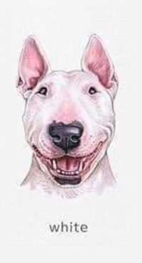
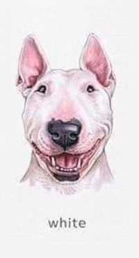
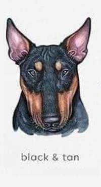
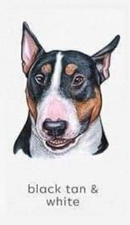
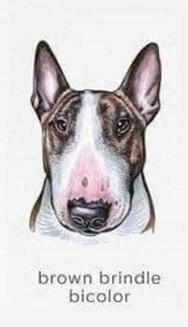
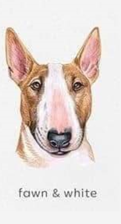
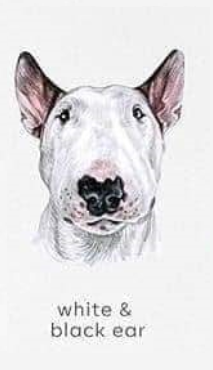
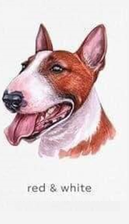
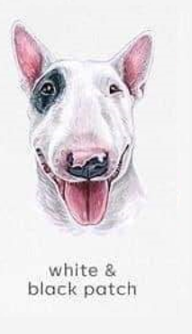

Bull Terrier Blanco
Este es un hermoso Bull Terrier de color blanco. Es amigable, enérgico y le encanta jugar.
Ubicación: Buenos Aires, Argentina
Ver másEste es un hermoso Bull Terrier de color blanco. Es amigable, enérgico y le encanta jugar.
Ubicación: Buenos Aires, Argentina
Ver másEste Bull Terrier negro tiene un pelaje brillante y una personalidad encantadora. Es leal y protector.
Ubicación: Rosario, Argentina
Ver másBull Terrier tricolor con manchas negras, blancas y marrones. Es cariñoso y hace un gran compañero.
Ubicación: Córdoba, Argentina
Ver másEste Bull Terrier atigrado tiene un patrón de rayas distintivo. Es juguetón y amistoso con los niños.
Ubicación: Mendoza, Argentina
Ver másBull Terrier marrón con una personalidad cariñosa. Le encanta correr al aire libre y es muy activo.
Ubicación: La Plata, Argentina
Ver másEste Bull Terrier gris tiene un pelaje suave y sedoso. Es tranquilo y relajado, pero también le gusta jugar.
Ubicación: San Juan, Argentina
Ver másBull Terrier rojo con un pelaje brillante. Es energético, amigable y le encanta estar alrededor de la gente.
Ubicación: Salta, Argentina
Ver másEste Bull Terrier Pirata es único. Tiene un pelaje suave y una naturaleza amorosa.
Ubicación: Tucumán, Argentina
Ver más